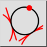

2 Tangents and Point
แถบเครื่องมือ / ไอคอน:

เมนู:
วาด > วงกลม > 2 Tangents and Point
ทางลัด:
C, T, 2
คำสั่ง:
circletangent2 | ct2
คำอธิบาย
วาดวงกลมที่สัมผัสกับสองเอนทิตีและผ่านจุดหนึ่ง
การใช้งาน
ระบุเอนทิตีสัมผัสแรก
ระบุเอนทิตีสัมผัสที่สอง
ระบุจุดบนเส้นวงกลม